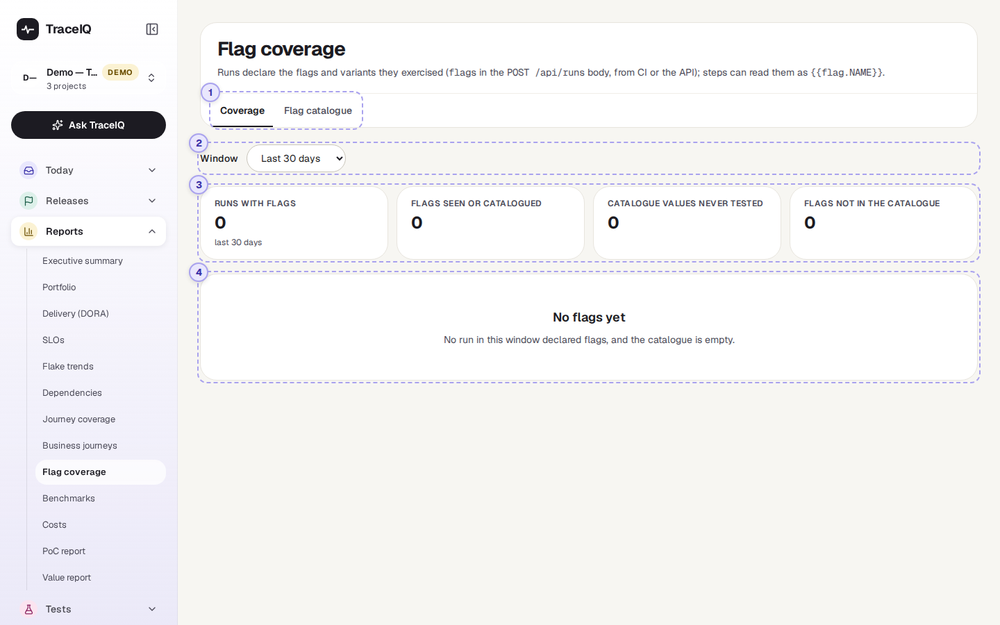
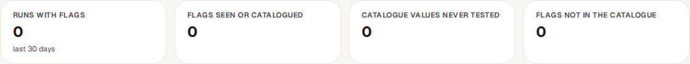
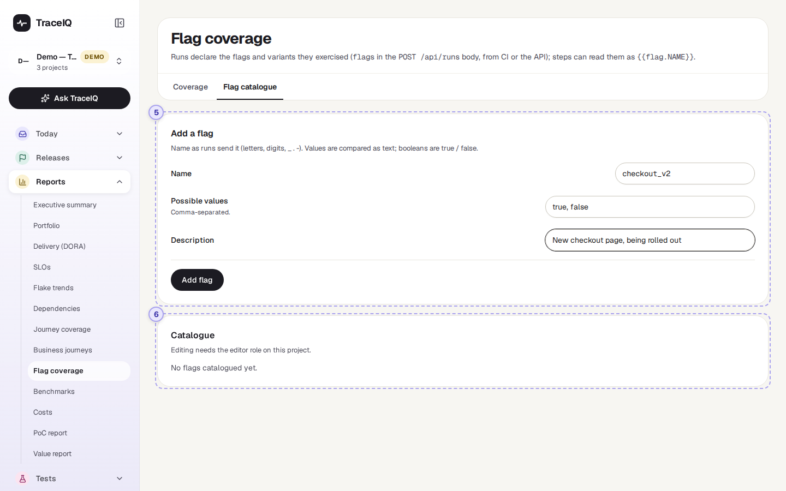
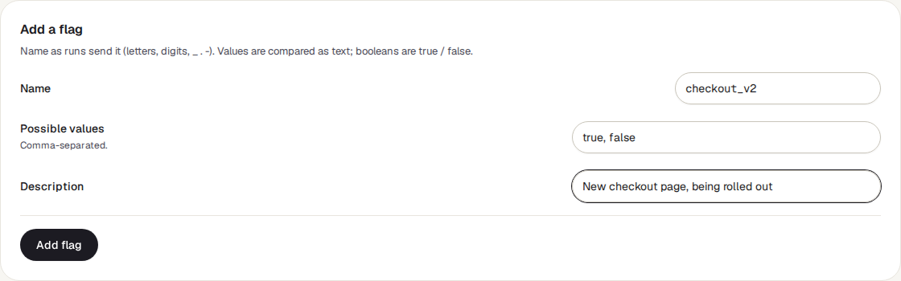

Flag coverage
Many apps can be switched into different versions with feature flags ("new checkout on or off") or A/B variants ("layout A or B"). This page shows which of those settings your test runs have actually tried, how those runs went, and which settings no run has tested at all.
What it is for
Flag coverage answers "Have we tested every version of the app our customers might see?" If the new checkout is switched on for half of your customers but every test ran with it switched off, the tests say nothing about what that half sees. This page makes that gap visible.
Testers
Find flag values that no run has tried yet, and see whether runs with a value pass as often as runs without it.
Developers
Check that a flag you are about to switch on has been tested in both positions.
Product owners
Keep a list of the flags and experiments that exist, with a short description of each.
Where to find it: in the sidebar, open Reports → Flag coverage. It shows the project selected at the top of the sidebar.
Where the flag values come from
TraceIQ doesn't read your app's flag settings. Instead, whoever starts a test
run says which flags it runs with. A run is one time TraceIQ carries
out a set of tests and records the result of each. Runs started from a build pipeline
(CI) or by a script through TraceIQ's API can include a list such as
checkout_v2 = true, layout = B. Runs started with the buttons in
TraceIQ itself don't carry flags.
Ask the person who looks after your build pipeline to add the flags when it starts a run.
(For them: the flags field of the POST /api/runs body, up to 50
names, each a text or true/false value.) Tests can also use the value in their steps,
written as {{flag.checkout_v2}}.
A tour of the screen
The page has two tabs: Coverage (the report) and Flag catalogue (the list of flags you expect). The numbers on the screenshots match the sections below.

The tabs
Coverage is open when the page loads. Flag catalogue is where you list the flags and values you expect (parts 5 and 6).
Window
How far back to look: the last 7, 30 (the starting value), 90 or 180 days. Only runs started in that time count.
The four tiles

| Tile | What the number means |
|---|---|
| Runs with flags | Runs in the window that said which flags they ran with. Runs without flags are not counted anywhere on this page. |
| Flags seen or catalogued | Every flag name that appears in those runs, in the catalogue, or in both. |
| Catalogue values never tested | Values listed in the catalogue that no run in the window has used. This is the number to bring down. |
| Flags not in the catalogue | Flag names runs sent that nobody has added to the catalogue, often a typo or a new flag. |
One card per flag
Below the tiles there is one card per flag, in alphabetical order. While no run has sent flags and the catalogue is empty, there is only the message "No flags yet", as in the picture. A card shows:
- The flag's name, with labels: not in catalogue when runs sent it but it isn't listed, and 2 value(s) never tested when catalogue values are missing from the runs. The catalogue's description is shown underneath.
- Never tested: the catalogue values no run has used.
- A table with one row per value runs used, the most used first:
| Column | What it means |
|---|---|
| Value | The value, such as true or B. A not catalogued label means the flag is in the catalogue but this value isn't in its list. |
| Runs | How many runs used this value. |
| Cases | How many different tests those runs carried out. |
| Passed / Failed | How many of those runs passed, and how many failed or ended in an error. Runs still going, cancelled or timed out are in neither. |
| Last seen | When the newest run with this value started, in your time zone, with a run link to open it. |
A catalogued flag that no run used shows "No run in this window used this flag." instead of a table.
The Flag catalogue tab

Add a flag

- Name: exactly as runs send it, up to 64 letters, digits,
_,.or-. Capital letters count:Checkoutandcheckoutare two flags. - Possible values: separated by commas, up to 50. Values are compared as text; for an on/off flag, type
true, false. - Description: optional, shown on the flag's card.
- Add flag saves it. A name that is already in the catalogue is refused.
Catalogue
Every catalogued flag, one row each, in alphabetical order. You can change a flag's values and description and press Save, or press Remove (it asks first). The name can't be changed: remove the flag and add it again. Removing a flag only takes it off the list; the runs that used it still count on the Coverage tab.
Watch it in use
How to…
…find flag values nobody has tested
- On the Flag catalogue tab, make sure each flag lists all its possible values.
- Go back to Coverage and choose a window, such as the last 30 days.
- Look at Catalogue values never tested, then for cards with a red "never tested" label. Each one names the values missing.
- Ask for a run with those values, for example by adding them to the build pipeline.
…see whether a flag value makes tests fail
- Find the flag's card on the Coverage tab.
- Compare the Passed and Failed columns between its values. If one value fails much more often, it is worth a look.
- Press run under Last seen to open the newest run with that value.
…tidy up flags that runs send but nobody listed
- Look for cards with not in catalogue.
- If the name is a typo, ask for the pipeline to be fixed. If it is a real flag, add it on the Flag catalogue tab with its values.
Good to know
- Only runs that send flags count. TraceIQ doesn't know which flags were on in your app unless the run says so.
- Runs, not tests, carry flags. Every test in a run counts towards each flag value that run sent.
- At most 5,000 runs are counted, the newest ones. When the window holds more, the first tile says "newest 5,000 counted".
- Check runs are left out. Runs TraceIQ makes only to try a suggested fix (see Proposals) are not counted.
- In a test step,
{{flag.NAME}}is replaced by the value the run sent. If the run didn't send that flag, the text stays as it is. - Who can do what. Anyone with access to the project can see both tabs. Adding, changing or removing catalogue flags needs the editor role; every change is recorded in the audit log. A project can catalogue up to 500 flags.
- It doesn't update by itself while you look at it; it refreshes when you come back to its browser tab, or when you reload.
Related pages
Benchmarks
The next page in this guide: run the same tests against several sites and compare them side by side.
Business journeys
The previous page: group tests into the journeys your customers make, and see each one's health.
Runs
Every run, with each test's steps, screenshots and logs.
API keys
The keys a build pipeline uses to start runs, including runs that send flags.